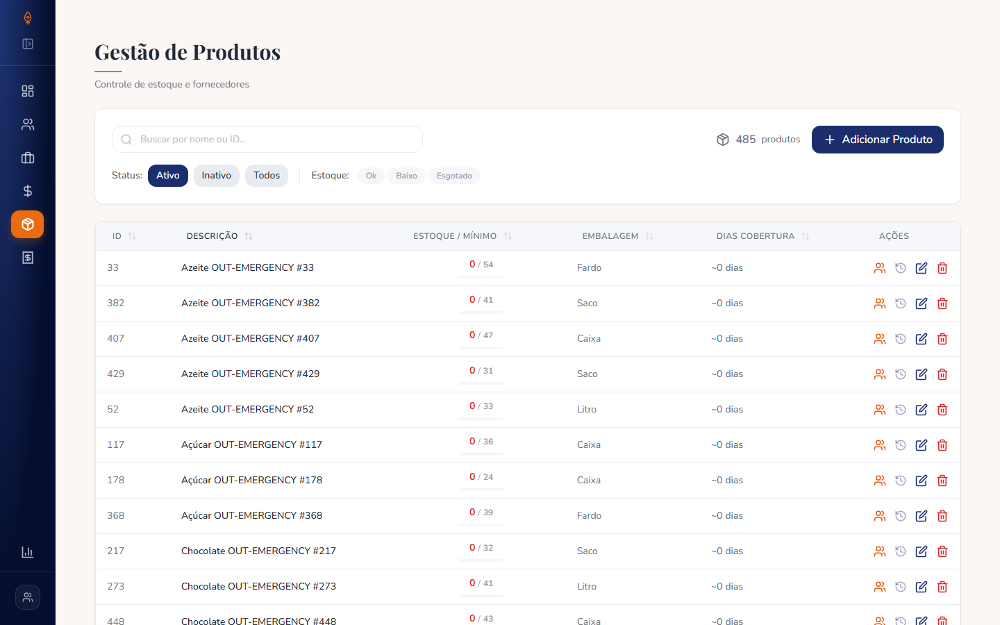
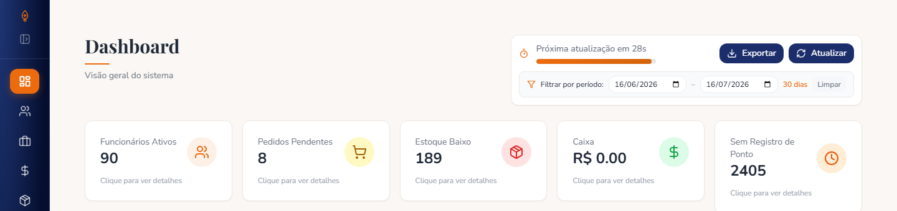

The problem
The default instinct in most React frontends is to hit the API for every frontend action — a click, a form submission, a page navigation, a filter change, a tab regaining focus and refetching "just in case." None of that tracks real freshness — it's a guess dressed up as a safety margin. A filter toggle in the ERP's products screen was exactly that: flip a filter, wait for a request; flip it back, wait again, for data already downloaded seconds earlier. Simply caching the last response isn't enough on its own, though — caching that goes stale silently is worse than over-fetching. If a user creates a product and the list keeps showing the old count, the cache isn't saving a request, it's lying. The real requirement was to cache aggressively enough that repeat interactions are free, while knowing precisely which cached entries a given write actually invalidates.
That's easy to get wrong because products and purchase orders are related in more than one direction — the reorder recommendations screen reads both current stock levels and open orders to decide what to suggest buying. When a product's stock changes, the cached recommendations are no longer trustworthy, even though no order changed. But a product edit has no bearing on an unrelated products query, and refetching that anyway is wasted work.

Three domains recur below: products (the inventory catalog), orders (reference products by id), and inventory recommendations (a restock-suggestion query joining current stock against open orders in a single CTE, so a stock edit or a new order can each independently make its cached result wrong).
The alternatives
- Plain
fetchin auseEffect, refetch on every mount. Correct by construction, but every navigation and filter toggle becomes a network round trip. - Manual refetch-on-focus or a fixed polling interval. Refetches on a schedule or event with no relationship to whether the data changed. Neither interval can be tuned to be "right," because the real signal — did a mutation happen that affects this data — is available and being ignored in favor of a timer.
- Manual state plus hand-rolled refetch logic. Call a
refreshProducts()-style function wherever a mutation might affect it. Full control, but every new screen has to remember to call it; miss one and you get silent staleness with no error to catch it. - A general-purpose in-memory cache keyed by URL or endpoint name. Solves "forgot to refetch" but reintroduces coarseness: distinguishing a filtered variant means building key-composition logic by hand — most of what a real query cache does anyway.
- TanStack Query. A cache keyed by a structured value you control, where
staleTimedecides whether a subscriber gets the cached entry or triggers a fetch, and invalidation matches by key.
The deciding factor wasn't "more features." staleTime plus keyed invalidation replaces both blunt instruments with a model where freshness is a property of the cache entry — has something invalidated this key since it was fetched — not a property of the clock or window focus.
The decision
Query keys: params are part of the identity, not metadata
The design choice that made everything downstream work was treating filter params as part of what identifies a piece of cached data, not an incidental argument to a fetch function. A products list filtered to status=active and one filtered to low_stock_only=true are two different pieces of server data:
export const useProducts = (params?: { status?: ActivityStatus; low_stock_only?: boolean }) => {
const query = useQuery({
queryKey: ['products', params],
queryFn: () => getProducts(params),
});
return { ...query, products: query.data?.items ?? [], total: query.data?.total ?? 0 };
};
export const useProduct = (productId: number) =>
useQuery({
queryKey: ['product', productId],
queryFn: () => getProduct(productId),
enabled: !!productId,
});Query keys are hashed deterministically, not compared by object reference — ['products', { status: 'active' }] is the same cache entry whether the params object is reused or rebuilt fresh each render, which matters since useProducts reconstructs params every render. That entry and ['products', { low_stock_only: true }] live side by side with independent freshness clocks, so toggling a filter serves both instantly — the direct fix for the original complaint. enabled: !!productId stops the detail query firing for an undefined id while a screen resolves which product to show. The same shape repeats for orders, which is what makes the invalidation rules below generalize across both domains.
Invalidation has to be scoped, or the cache isn't worth having
The naive version — invalidate everything whenever anything changes — throws away most of the benefit of caching. The rule: a mutation invalidates exactly the entries it actually affected. In practice that meant two invalidation calls after a product write:
onSuccess: () => {
toastSuccess('Produto cadastrado com sucesso!');
queryClient.invalidateQueries({ queryKey: ['products'] });
queryClient.invalidateQueries({ queryKey: ['inventory-recommendations'] });
},['products'] on its own is a prefix — TanStack Query matches it against every key that starts with that value, so every filtered variant currently cached gets marked stale in one call. Whichever one is on screen refetches immediately; the rest refetch next time someone navigates to them.
The second call is easy to forget: a product create or edit also invalidates ['inventory-recommendations'], even though no order record changed. That's a cross-entity dependency — recommendations reading from product data — and nothing in the type system flags it automatically, so it's encoded explicitly in every product mutation's onSuccess.
The order side runs the other direction, scoped even further: creating or updating an order also invalidates ['inventory-recommendations'], but with refetchType: 'none' rather than an immediate refetch. That query backs onto a CTE expensive enough that firing it after every order write — most of which never touch the recommendations screen in the same session — would be wasted database load. refetchType: 'none' marks the entry stale without an eager refetch; the next component that subscribes to that key sees the stale flag and fetches then, instead of the invalidation itself firing a request nobody's waiting on.
The value of a query key isn't that it's unique — it's that it's structured enough to invalidate a slice of the cache without invalidating the whole thing. A flat cache keyed by URL can only ever answer "clear this endpoint or don't"; a composite key can answer "clear every products list, but leave the recommendations query stale-and-deferred rather than eagerly re-run."
useUpdateOrder also calls setQueryData to patch the single-entity ['order', orderId] cache entry in place with the mutation's own response, skipping a round trip and a loading flicker, before invalidating the list views the order might also appear in. That works because it's exactly one entry and the response is the correct new value for it. ['orders', params] can have any number of live variants, and there's no way to know which filtered result sets the order belongs in or dropped out of, so invalidating and letting each variant refetch avoids re-deriving filter logic client-side. In-place patching only makes sense for a single known entry; everywhere else, invalidation is the rule.
The QueryClient: one policy, inherited everywhere
The key-scoping and invalidation discipline above only stays legible if retry and freshness rules are the same across every screen. That's what the QueryClient instance is for — a single object, created once, that every useQuery and useMutation inherits its defaults from:
import { QueryClient } from '@tanstack/react-query';
export const queryClient = new QueryClient({
defaultOptions: {
queries: {
retry: (count, error: unknown) => {
const status = (error as { response?: { status: number } })?.response?.status;
if (status !== undefined && status >= 400 && status < 500) return false;
return count < 2;
},
retryDelay: (attempt) => Math.min(1000 * 2 ** attempt, 10_000),
staleTime: 30_000,
refetchOnWindowFocus: true,
refetchOnMount: true,
refetchOnReconnect: true,
},
mutations: {
retry: false,
networkMode: 'online',
},
},
});Each option is a separate decision, not a bundle copied from a template:
queries.retry(function, not a count). The default is "retry 3 times regardless," wrong here since client errors like validation (422) or authorization (403) won't succeed on retry. Returnsfalsefor any 400–499 status; anything else gets up to two retries.queries.retryDelay. Exponential backoff (1s, 2s, 4s...) capped at 10 seconds, so a flaky connection doesn't compound into a long wait.queries.staleTime: 30_000. Not "refetch every 30 seconds" — "treat data less than 30 seconds old as fresh." It doesn't eliminate mount/focus/reconnect refetches; it changes when they're necessary — cache hits while fresh, real synchronization once stale.refetchOnWindowFocus/refetchOnMount/refetchOnReconnect(alltrue). The safety net understaleTime: past the stale window, these fetch the update, but unlike a naive focus listener, only when already stale.gcTime(library default, five minutes).staleTimecontrols refetch-on-subscribe;gcTimecontrols how long an entry survives once nothing subscribes at all. Under five minutes, the last-known list still renders instantly; longer, and it's garbage-collected.mutations.retry: false. Writes often aren't idempotent, so retrying an ambiguous failure risks a duplicate side effect.mutations.networkMode: 'online'. Holds a mutation paused while offline instead of firing into immediate failure.
The same queryClient is created once and handed to a single QueryClientProvider at the app root, which is what makes cross-domain invalidation possible in the first place.
The outcome
Switching a filter, or navigating back to an already-visited screen, stopped triggering a request when the underlying data hadn't changed — the network tab went from a request per interaction to a request per interaction that actually needed one. Just as important, the cache stopped being something to distrust: because invalidation is declared at the point of the mutation rather than left to individual screens to remember, a new screen reading product data gets correct behavior the first time it subscribes to that query key, with no additional wiring. The same pattern paid off on the orders side almost for free.
